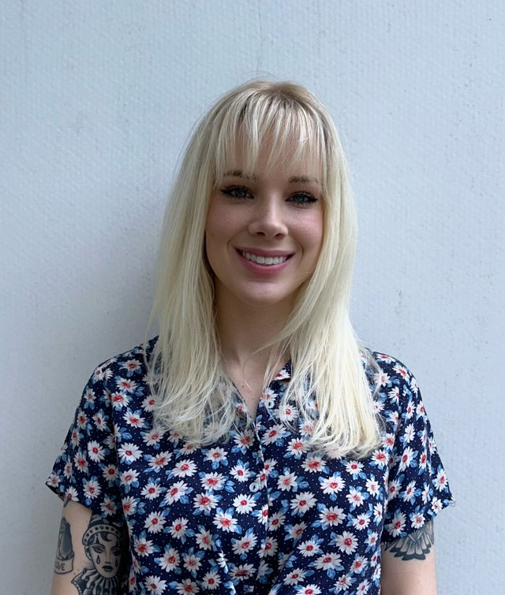

S. Taylor Head, PhD
Postdoctoral Fellow, Bhattacharya Lab
Department of Epidemiology, MD Anderson Cancer Center

About
I am a statistical geneticist. I develop and apply statistical models to understand the genetic architecture of complex human traits, with an emphasis on breast cancer risk and mammographic density.
My recent work maps genetic effects at the level of transcript isoforms rather than whole genes, using long-read transcript assemblies and isoform-level transcriptome-wide association studies (TWAS). I also study how analytic choices in RNA-seq processing affect whether eQTL, colocalization, and TWAS findings replicate.
I am a postdoctoral fellow with Arjun Bhattacharya at MD Anderson Cancer Center. I received my MSPH and PhD in Biostatistics from Emory University, where I worked with Michael Epstein on methods for parent-of-origin effects and on TWAS of breast and ovarian cancer.
Research
-
Isoform-level genetics of breast cancer risk
Resolving risk loci to the transcript isoforms they act through, with long-read assemblies and isoTWAS.
-
Replicable transcriptomic genetics
Measuring how quantification and annotation choices change eQTL, colocalization, and TWAS results.
-
Statistical methods for genetic architecture
Tests for parent-of-origin effects, cis- and trans-eQTL TWAS, and mammographic density as an intermediate risk phenotype.
News
- Our study of how quantification methods affect eQTL replicability, colocalization, and TWAS is out in Nature Genetics.
- Comparison of mammography AI, polygenic, and clinical breast cancer risk models published in JNCI.
- Preprint: long-read transcript assemblies improve isoform-level eQTL and integrative analyses of breast cancer risk.
- Isoform-level analyses of six cancers published in British Journal of Cancer.